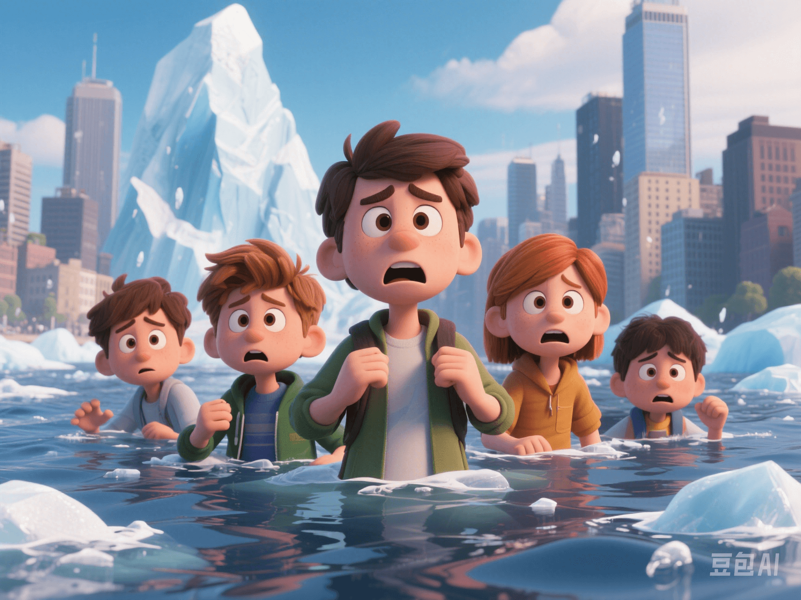

Climate Anxiety: Understanding and Coping
PeaceLove.Top Insights :2025-04-12
Today, we're going to talk about a real - life feeling that makes people more nervous than the weather forecast - **Climate Anxiety** 🌍🌪️
🌡️ "Will our generation have a future?"
Generation Z (born between 1995 and 2010) is being surrounded by a brand - new sense of anxiety. It's not about school admissions or the rat - race, but rather, "How much longer can the Earth survive?"
📊 According to a Lancet survey covering 10 countries, 75% of teenagers said they "fear for the future", and 56% believed that "humanity is doomed". What they see on their feeds are not motivational quotes, but:
- Accelerated melting of Arctic glaciers
- Reversal of carbon emissions in the Amazon rainforest
- Sea - level rise threatening coastal cities
- "The global temperature is approaching the critical point."
This is not just 'environmental anxiety', but a deep - seated existential dread - Will I have children? Does my hard work make any sense?
🔥 Manifestations of Climate Anxiety
📍 Psychological level:
- Excessive attention to climate news, even 'doomscrolling'
- Feelings of powerlessness, anger, and despair: 'Why aren't they doing something?'
- Repeatedly imagining doomsday scenarios of the Earth and suffering from long - term insomnia
📍 Behavioral level:
- Abandoning certain life plans (such as having children)
- Compulsive environmental - protection behaviors (extreme vegetarianism, refusing to use transportation)
- Radical 'climate despairism': believing that it's hopeless to save the planet
📊 Data shows:
- A global survey published in The Lancet found that 75% of young people think 'the future is terrifying'.
- More than **45%** of respondents said 'climate change has affected my daily life functions'.
- They described climate change as 'betrayal', 'a neglected danger', 'a cage with no escape'.
This anxiety is not just an environmental issue, but an existential crisis.
😰 What impacts can climate anxiety bring?
| Manifestation | Description |
|---|---|
| Emotional burden | Intensification of anxiety, depression, insomnia, and feelings of helplessness |
| Behavioral withdrawal | Avoiding future planning, losing motivation, and feeling indifferent to the world |
| Physical symptoms | Accelerated heart rate, inattention, and gastrointestinal disorders |
"If the Earth can't even last a hundred years, why should I study, work, or fall in love?" - This is not a dramatization, but a real confession in the hearts of many young people.
🧠 The emergence of climate psychology: 'Treat emotions with low - carbon methods'
Some European and American countries are starting to recognize that this anxiety is not just an emotional fluctuation, but a psychological reaction to global risks.
🛠️ One of the coping measures:
🧯 The 'Climate Mental Health First Aid' course is being incorporated into middle - school and university education. The course content includes:
- How to regulate emotions related to climate anxiety (meditation, cognitive - therapy techniques)
- How to find a sense of action in the face of anxiety (community environmental protection, policy advocacy)
- How to communicate your 'environmental anxiety' to relatives and friends without being laughed at
- How to distinguish 'pseudo - environmental anxiety' (anxiety incited by marketing)
This is not just psychological building, but also the cultivation of 'inter - generational resilience'.
🌱 Heal anxiety with action
Psychologists generally believe that the core problem of climate anxiety is not 'fear', but 'powerlessness'.
✅ Effective ways to relieve climate anxiety:
- Join local environmental - protection organizations or campus greening groups
- Participate in the 'Climate Letter - writing' campaign (write to policymakers)
- Launch a 'weekly carbon - reduction challenge' with friends
- Pay attention to positive climate news, such as breakthroughs in renewable energy and progress in international environmental - protection agreements
This kind of behavior is called **'Empowering Eco - Action'**. It's not just empty talk, but a real way to enhance the sense of control.
✅ How to self - heal in the face of anxiety?
🌤️ Here are some tips:
- Acknowledge your anxiety and don't think of it as 'being overly sensitive' or 'unnecessary'.
- Limit your exposure to news or social media regularly to avoid being overwhelmed by information.
- Share your feelings with peers instead of suffering alone. Find someone you trust to talk to.
- Participate in environmental - protection activities without being too hard on yourself. Environmental protection doesn't mean self - deprivation.
- Remember: You're not an isolated individual, but a part of the change in the ecosystem.
🫂 A gentle reminder
Your anxiety is real. It's not 'being overly sensitive'. We can't save the world alone, but together, we can change the world, even if it's just a little bit.